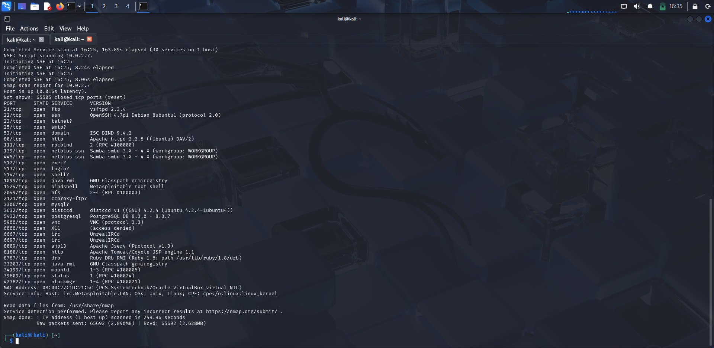

A comprehensive walkthrough of exploiting Metasploitable2 — an intentionally vulnerable Linux VM. Covers service enumeration, vulnerability exploitation, and privilege escalation across 9 attack surfaces.
Environment
Tools Used
Reconnaissance
sudo nmap -sV -v -T5 -p- <target-ip>

| Port | Protocol | Service | Version | Status |
|---|---|---|---|---|
| 21/tcp | FTP | vsftpd | 2.3.4 | Critical |
| 22/tcp | SSH | OpenSSH | 4.7p1 Debian | High |
| 23/tcp | Telnet | Linux telnetd | — | High |
| 25/tcp | SMTP | Postfix smtpd | — | Medium |
| 80/tcp | HTTP | Apache httpd | 2.2.8 | High |
| 139/445 | SMB | Samba smbd | 3.0.20 | Critical |
| 3306/tcp | MySQL | MySQL | 5.0.51a-3ubuntu5 | High |
| 5432/tcp | PostgreSQL | PostgreSQL | 8.3.x | Critical |
| 3632/tcp | distccd | GNU distccd | — | Critical |
Attack Surface
Project
This lab is a structured documentation platform for exploiting Metasploitable 2 — an intentionally vulnerable Linux machine designed for penetration testing practice. Every attack performed here was conducted in an isolated, controlled environment.
The documentation covers the full kill chain: reconnaissance → exploitation → privilege escalation, with screenshots, commands, and blue team mitigations for each service.
Ethical Disclaimer: All techniques demonstrated in this lab are performed on intentionally vulnerable systems in a controlled environment. This content is for educational purposes only. Never apply these techniques without explicit authorization.